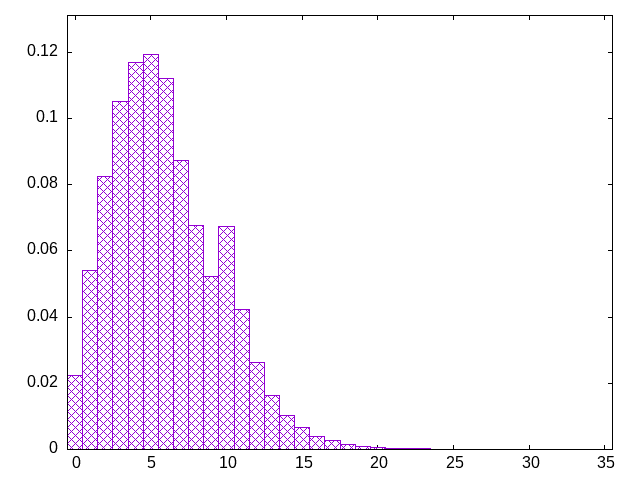

weight according to recentness
linear
zojlolszzjtszloilztzojsitljilozsitljzloisltsszosjtlizzjzstjolstztzojliltjosjstzioltsotjolsztzzijoltzsostizszttoljiztizsjioltjolitzijolstjtoztijjltstzostilotzjtiolssoijztstiojisoztjijsitjsoiztsotzlojtzsljzisotjlisjozjiztojjlsojzitslostisjztloizilsoizjotiltzlsolzjtjizzjosolsiztjlstjzioztjsjssoilsjzlotljtziljsziljtszoitosjsloztijlojztlizjolitstzilstojislstzoijzosoljiloztzjljisltzojitjsljzoiszjlizjtiotslizljltsoijlotzstjoltizsotosijoztlsitzzljzitozlosztjzsoitljsztitszijlozlziszjltlosozitsjosliztolslijztoliztljlsjizlolosijitlozlszltoisojltzjlsljolilsztlioztjsiloisjttzostjijzossolitlstojiztsstoljizsltszoilojzslltoiljsljzsiojsotzsoljtzisljotzjsslojtsiozsjjtiolsojiozltzsltjszijozsojtlijlostollzotojslozijsltzsltjsoijzltzsiztojsjijtloijtljstjzosjztiotsjzosltijziloltziljsizjzlotlsoljiltzijljiszostilozjtlzjsjoliosijtzosszijiotzotlzisjlzlozsliojztltizjstlzlosljtloijztzsotjlilozsijlzstojsloziotjtlzstioljotzzszostiljozsoitjltsizjztloizjsjjtzljtzjitosljtzilsjitostliztilszjoiozjottzlsjlizsosoljtojziits
bagginess: 0.0816
bagginess6: 0.5705
distribution1_maxgap: 0.00044199999999999795
distribution2_maxgap: 0.019808019808019807
distribution3_maxgap: 0.0027460054920109838
distribution4_maxgap: 0.00033900101700305106
diversity: 5.6
entropy: 10.818
evenness_diff: 5.863
evenness_same: 4.106
maxdrought: 32.7
maxflood: 4
peakdrought: 5.0
repchance: 0.0222
seq4_coverage: 0.9988
seq4_follow: 7.564
drought_graph:

similarity: (lower is more similar)
| 0.047 | weight_lin_pure |
| 0.055 | weight2 |
| 0.074 | tgm |
| 0.084 | balanced5 |
| 0.096 | tgm_pure |
| 0.107 | shirts_smooth_c10 |
| 0.120 | shirts_smooth_c8 |
| 0.123 | deepbag_window4 |
| 0.123 | seamless_deep_pure |
| 0.131 | shirts_g3w7 |
| 0.140 | shift3_5 |
| 0.142 | bag |
| 0.143 | bag_pure |
| 0.145 | wet3_size12 |
| 0.181 | wet2 |
| 0.182 | balanced7 |
| 0.183 | tgm_tap |
| 0.195 | tgm_tap_pure |
| 0.209 | bag2 |
| 0.210 | weight_exp |
| 0.213 | shift7 |
| 0.223 | weight_exp_pure |
| 0.228 | shirts_smooth_c12 |
| 0.271 | deepbag_fixed7 |
| 0.277 | ti |
| 0.316 | nes_pure |
| 0.326 | nes |
| 0.326 | seamless_bag2_pure |
| 0.338 | deepbag_fixed4 |
| 0.366 | seamless_bag_pure |
| 0.371 | shirts_smooth_c14 |
| 0.396 | deepbag_window7 |
| 0.398 | shirts_g1w3 |
| 0.407 | wet_pure |
| 0.433 | seamless_bag3_pure |
| 0.436 | bag3 |
| 0.443 | shift10_5 |
| 0.463 | deepbag_window10 |
| 0.468 | deepbag_fixed10 |
| 0.477 | balanced9 |
| 0.492 | bag4 |
| 0.494 | shift14 |
| 0.509 | balanced_long_add_pure |
| 0.541 | balanced_long_mul_pure |
| 0.543 | wet |
| 0.553 | shift21 |
| 0.636 | shirts_g1w7 |
| 0.651 | fullrandom |
| 0.652 | wet3 |
| 0.662 | fullrandom_pure |
| 0.673 | wet2_size100 |
| 0.676 | shirts |
| 0.869 | shirts_smooth |
| 1.663 | shift1_75 |
| 2.352 | repeat_recent_pure |
| 4.511 | repeat_last_pure |
| 7.257 | flatbag |
| 7.257 | flatbag_pure |